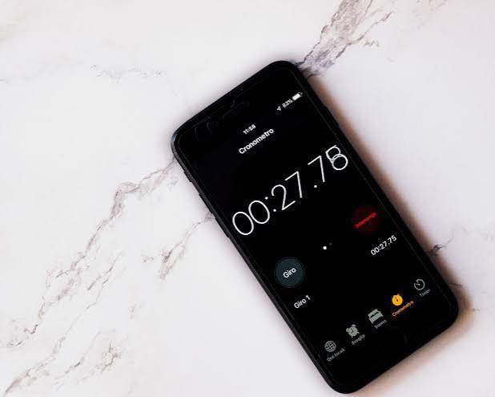

Un arbitre et un chrono
Une feuille, un téléphone et une personne qui note les passages. C’est gratuit et parfait pour tester un format de course. Pour suivre plusieurs pilotes à la fois, l’arbitre peut utiliser les smartphones des coureurs : un chrono par voiture. C’est sportif, mais ça marche.
